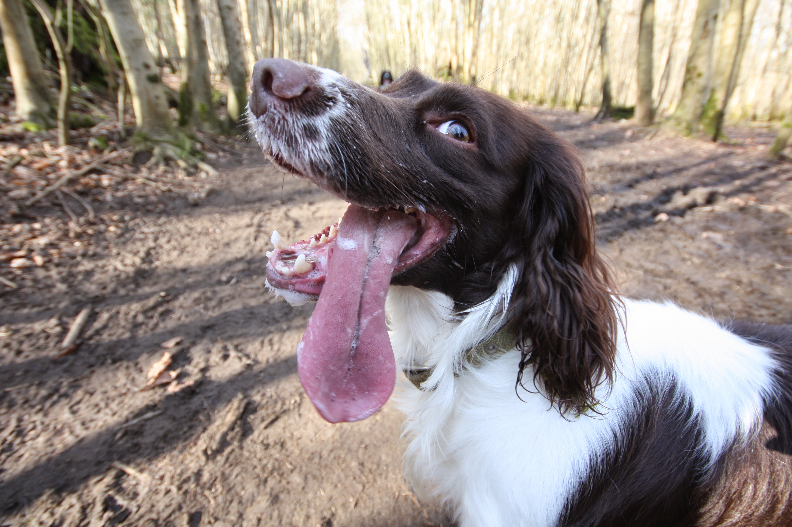

name: inverse layout: true class: underscore --- class: center, middle, hero .title[ ## The swiss army knife of generic programming — # shapeless's TypeClass type class in action ### Miles Sabin, [@milessabin](http://twitter.com/milessabin) [](http://underscore.io/) ] --- class: center, middle, hero .title[ ## The swiss army knife of generic programming — # shapeless's type class derivation in action ### Miles Sabin, [@milessabin](http://twitter.com/milessabin) [](http://underscore.io/) ] --- # ADTs in Scala ``` // Simple tree ADT ... sealed trait Animal case class Cat(name: String, fish: Int) extends Animal case class Dog(name: String, bones: Int) extends Animal ``` --- # ADTs in Scala  --- # Type classes in Scala ``` // Type class trait Eq[T] { def eqv(x: T, y: T): Boolean } ``` --- # Type classes in Scala ``` // Type class trait Eq[T] { def eqv(x: T, y: T): Boolean } // Data type trait Animal ... // Eq instance for Foo object Animal { implicit def eqAnimal: Eq[Animal] ... } ``` --- # Type classes in Scala ``` // Type class trait Eq[T] { def eqv(x: T, y: T): Boolean } // Data type trait Animal ... // Eq instance for Foo object Animal { implicit def eqAnimal: Eq[Animal] ... } // Summoning an instance scala> implicitly[Eq[Animal]] res0: Eq[Animal] = ... ``` --- # Type classes in Scala ``` // Type class trait Eq[T] { def eqv(x: T, y: T): Boolean } // Data type trait Animal ... // Eq instance for Foo object Animal { implicit def eqAnimal: Eq[Animal] ... } // Summoning an instance def foo[T](x: T, y: T)(implicit eqT: Eq[T]) = eqT.eqv(x, y) ``` --- # Type classes in Scala ``` // Type class trait Eq[T] { def eqv(x: T, y: T): Boolean } // Data type trait Animal ... // Eq instance for Foo object Animal { implicit def eqAnimal: Eq[Animal] ... } // Syntax implicit class EqOps[T](x: T)(implicit eqT: Eq[T]) { def ===(y: T): Boolean = eqT.eqv(x, y) } ``` --- # Type classes in Scala ``` // Type class trait Eq[T] { def eqv(x: T, y: T): Boolean } // Data type trait Animal ... // Eq instance for Foo object Animal { implicit def eqAnimal: Eq[Animal] ... } // Syntax implicit class EqOps[T](x: T)(implicit eqT: Eq[T]) { def ===(y: T): Boolean = eqT.eqv(x, y) } // Summoning an instance def foo[T: Eq](x: T, y: T) = x === y ``` --- class: center, middle # Example ... ### https://github.com/milessabin/demo-scaladayssf-2015 --- # History -- * Haskell 98 (Eq, Ord, Enum, Bound, Show, Read) -- * A Generic Deriving Mechanism for Haskell, Magalhaes, Dijkstra, Jeuring, Loh, Haskell Symposium 2010 (GHC 7.2.1, 2011) -- * Reducing boilerplate by generating type class instances automatically Lars Hupel, Scala Workshop 2013 -- * TypeClass in shapeless 2.0.0, Lars Hupel -- * Lazy and Generic in shapeless 2.1.0 -- * Generic1 in shapeless 2.2.0 ... on to Cats --- # ADTs in Scala ``` // Simple tree ADT ... sealed trait Tree[T] // case class Leaf[T](t: T) extends Tree[T] // case class Node[T](l: Tree[T], r: Tree[T]) extends Tree[T] ``` --- # ADTs in Scala ``` // Sum: Leaf[T] :+: Node[T] :+: CNil sealed trait Tree[T] // Product: T :: HNil case class Leaf[T](t: T) extends Tree[T] // Product: Tree[T] :: Tree[T] :: HNil case class Node[T](l: Tree[T], r: Tree[T]) extends Tree[T] ``` --- # ADTs in Scala ``` Sum: Leaf[T] :+: Node[T] / \ / \ / \ Product: T Tree[T] :: Tree[T] ``` --- class: center, middle # Enough slides ... code! ### https://github.com/milessabin/demo-scaladayssf-2015 --- # (De)serialization * Scodec — https://github.com/scodec/scodec * argonaut-shapeless — https://github.com/alexarchambault/argonaut-shapeless * Ensime SWANK protocol * Several simple examples in shapeless repo --- class: center, middle # Questions? --- # shapeless resources * Fork it! — https://github.com/milessabin/shapeless * Gitter channel — https://gitter.im/milessabin/shapeless * Blogs — * Mine — http://chuusai.com/blog * Underscore — http://underscore.io/blog * Typelevel — http://typelevel.org/blog * Travis Brown — http://meta.plasm.us --- class: center, middle, hero .title[ # Thank You ## Miles Sabin, [@milessabin](http://twitter.com/milessabin) ### http://underscore.io/ [](http://underscore.io/) ]